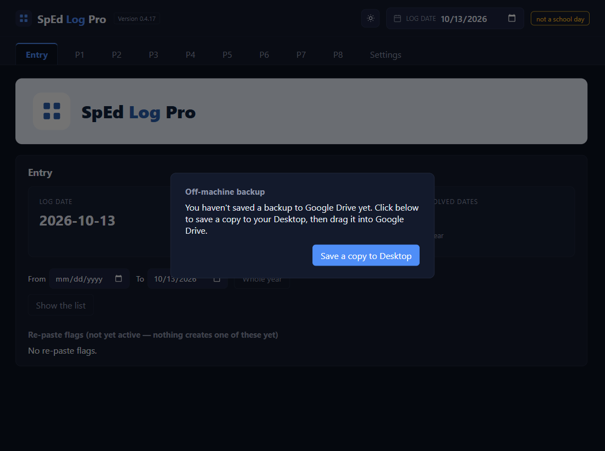
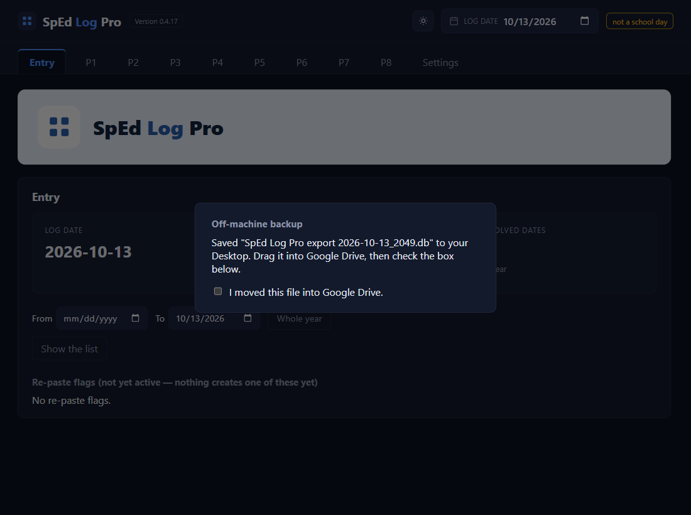
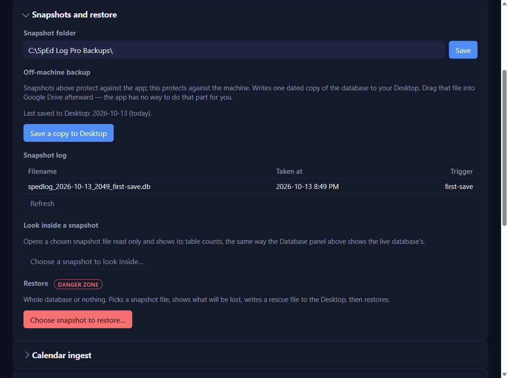

Start here · Stop 1 of 6
Back up to Google Drive
⏱ About 3 minutes🔁 Once a weekYou need: Google Drive
Stop 1 of 6
Why: the app saves its own backups on your computer, but those don't help if the laptop dies or is stolen. A copy in your Google Drive does. The app can't reach the internet, so it makes the copy and you carry it to Drive. Once a week, a panel reminds you, and it stays until you've done it.
1
When the backup panel appears, click Save a copy to Desktop
It appears the first time you open the app, then whenever it's been 7 days since your last copy. A file named like SpEd Log Pro export 2026-10-13_1837.db lands on your Desktop.

2
Drag that file into Google Drive
Open drive.google.com, open (or make) a folder such as SpEd Log Pro backups, and drag the file from your Desktop onto it. Drive can't open the file, and that's fine: it's a backup, not a document.
3
Tick “I moved this file into Google Drive.”
Only once it's really in Drive. The panel goes away.

4
Any time you like: Settings → Snapshots and restore
Save a copy to Desktop makes a copy whenever you want one, for example before a big change. The line above it says when you last did it.

✓ You'll know it worked
- The panel is gone.
- Settings → Snapshots and restore says
Last saved to Desktop: … (today). - The file is in your Drive folder.
✕ Avoid these
- Ticking the box before the file is in Drive. The tick is your promise; the app can't check it.
- Leaving the copies on the Desktop only. They protect nothing until they're in Drive.
⚠ If you see this
An error message and a Back to the app buttonThe Desktop copy couldn't be written (a missing or blocked Desktop folder). You're not locked out; the panel comes back later. If it keeps happening, ask your tech support about the Desktop folder.